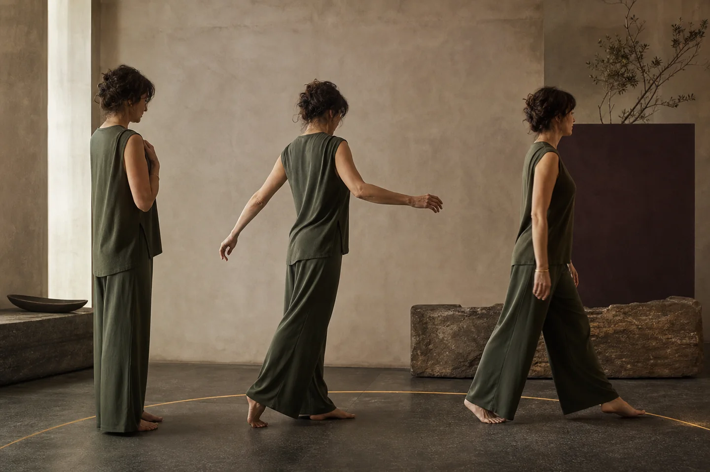
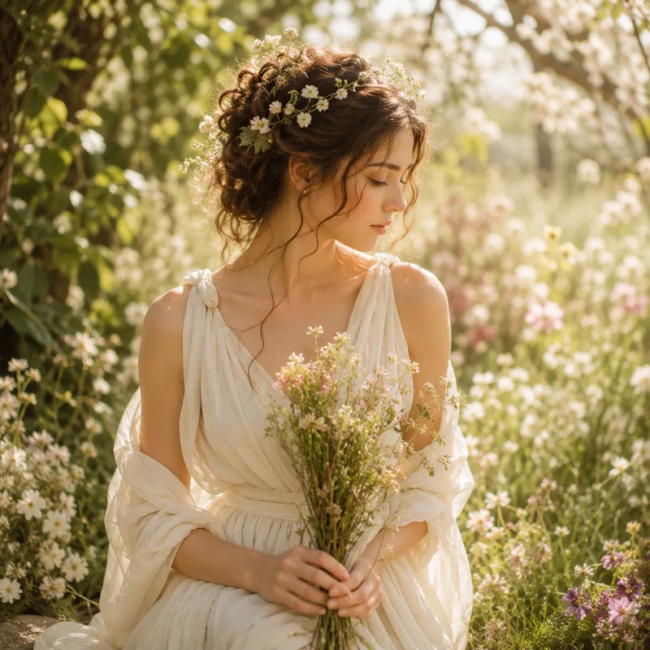
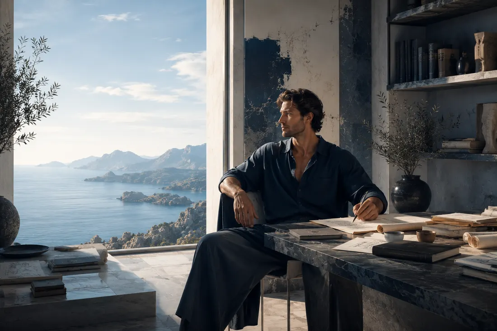
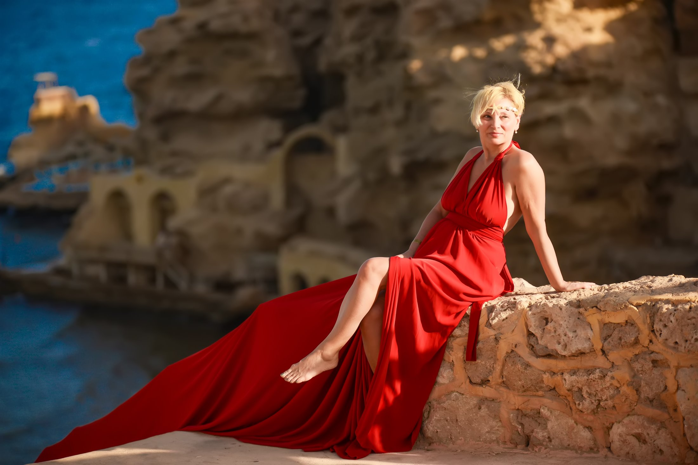

Афродита
Удовольствие не нужно заслуживать
Тело. Красота. Желание. Притяжение.
Архетипическая мистерия со Светланой Страусс · 19 августа · Москва
Прожить телом другое качество своей жизни
Архетипическая мистерия звука, движения и внутренних выборов
Вы уже умеете создавать результат.
Вопрос в другом:
успело ли качество вашей жизни вырасти вместе с ним?
Стоимость участия вы выбираете сами
12 200 ₽ или 18 800 ₽
Первый выбор можно сделать уже сейчас. После мистерии к нему можно будет вернуться.

Можно больше зарабатывать и меньше принадлежать себе. Получать новые возможности и не чувствовать больше удовольствия. Много понимать о себе, развиваться духовно, менять цели и обстоятельства, но телом продолжать жить в прежней скорости и прежнем напряжении.
Мне интересно преображение, которое становится земным.
Которое проявляется в том, как человек двигается, занимает пространство, выбирает людей, принимает удовольствие, чувствует собственную ценность, распоряжается ресурсом и проживает то, что уже создал.
19 августа мы не будем долго говорить о том, как хотелось бы жить.
Мы попробуем другое качество жизни на себе.
Это несколько часов живого опыта в камерной группе: музыка и движение, телесная настройка, игровые сцены и проживание четырёх архетипических энергий.
Специальная подготовка не нужна.
Нужно только позволить себе войти в игру и почувствовать:
мне действительно нравится так жить?
Мне хочется собрать людей, которым уже не нужно объяснять, как достигать. Тех, кто умеет принимать решения, создавать проекты, зарабатывать, брать ответственность и менять обстоятельства.
Но именно у состоявшегося человека однажды возникает другой вопрос.
Стало ли больше свободы внутри собственного масштаба? Осталось ли место для тела, удовольствия, красоты, любопытства, хороших людей, неожиданных решений?
Или следующий результат снова достигается тем же способом, которым были достигнуты предыдущие десять?
Следующий уровень не всегда требует делать больше.
Иногда он начинается с разрешения иначе проживать уже созданную жизнь.
Жизнь стала эффективнее. А стала ли она вкуснее?
19 августа, в день Преображения, мне особенно хочется исследовать именно это.
Не идеальный образ себя где-то в будущем.
А новое состояние, которое тело способно почувствовать сейчас.
Поэтому мы начнём не с тестов и не с интеллектуального разбора.
Сначала будет звук, музыка, движение, настройка тела.
Нам нужно выйти из привычного режима, потому что трудно попробовать новое, оставаясь всё время внутри прежнего способа себя контролировать.
А затем начнётся мистерия.
Для меня мистерия не означает что-то туманное или непонятное.
Это опыт, который невозможно получить, просто наблюдая со стороны.
В него нужно войти.
Выводит из повседневного ритма.
Даёт телу новый способ ответить.
Становится прожитым опытом.
Получает форму в жизни.
Один человек · два состояния
И вот здесь начинается то, ради чего мы собираемся.
Я предлагаю вам на несколько минут войти в энергию Афродиты.
Не изображать её для окружающих.
Не стараться стать ярче или сексуальнее.
А просто позволить телу почувствовать состояние, в котором удовольствие не нужно заслуживать.
Тело. Красота. Желание. Притяжение.
Выбор. Право занимать пространство.
И постепенно что-то меняется.
Человек иначе двигается. Иначе смотрит. Свободнее занимает пространство. Начинает замечать красоту вокруг себя и собственное удовольствие от присутствия в этом пространстве.
Для одного это оказывается удивительно естественно.
Другому становится почти неловко от количества разрешения себе.
А потом состояние меняется.
Теперь мы пробуем Зевса.
И тот же человек вдруг иначе чувствует масштаб. Право выбрать место. Распорядиться ресурсом. Принять решение без необходимости десять раз его объяснять.
Не лучше.
Не правильнее.
Просто иначе.
Не понять разницу между архетипами головой.
А почувствовать своим телом:
какой способ быть действительно расширяет меня?
Четыре качества вечера
В течение вечера мы будем входить в четыре разных качества.
Нам не нужно будет решить, «кто вы». Гораздо интереснее попробовать разные состояния и заметить, где появляется отклик, свобода и энергия, а где пока приходится себя убеждать.

Чувствительность к новому. Способность заметить открытую дверь и позволить себе войти туда, где ещё нет полной определённости.

Тело. Красота. Желание. Притяжение. Способность не просто иметь материальную жизнь, а наслаждаться ею.
Выбор. Право занимать пространство, распоряжаться ресурсом и создавать собственные правила игры.

Внутренняя стоимость. Сила, которой не требуется постоянное подтверждение извне.
Не смотреть со стороны
Не визуализировать их с закрытыми глазами. А проживать в пространстве.


Можно попробовать другой способ войти в комнату. Иначе принять внимание. Почувствовать свой масштаб не как обязанность, а как естественное право занимать место.
Можно оказаться в сцене, где ресурса достаточно.
Где не нужно спешить.
Где рядом люди вашего уровня.
Где вы выбираете не только самое рациональное, но и то, что действительно нравится.
Где деньги, отношения, тело, среда и удовольствие существуют не в разных отсеках жизни, а складываются в одно качество.
Это игра. Но именно игра иногда позволяет взрослому человеку увидеть то, что он давно научился объяснять себе слишком рационально.
Свобода выбора и качество среды
Для многих людей на этой встрече деньги сами по себе давно не являются главной проблемой.
Вы умеете зарабатывать.
Поэтому интереснее другой вопрос:
что становится больше вместе с вашим доходом?
Если растёт только ответственность, количество задач и необходимость всё удерживать, это один вкус денег.
Если вместе с доходом увеличиваются свобода, качество среды, время, путешествия, красота, удовольствие и возможность выбирать, это уже совсем другой вкус.
Такие деньги мне нравится называть вертикальными.
Они увеличивают не только сумму.
Вместе с ними растёт качество самой жизни.
Деньги станут одной из сцен мистерии.
Не главной темой.
Потому что тело, отношения, масштаб, удовольствие, среда и деньги в конце концов приводят к одному вопросу:
нравится ли мне способ, которым я живу?
Рост не только суммы
Рост качества самой жизни
Первый внутренний выбор
Для всех участников формат одинаковый.
Но стоимость вы выбираете сами.
12 200 ₽ или 18 800 ₽
Можно сделать выбор заранее.
Можно начать с 12 200 ₽ и после прожитого опыта решить, хочется ли оставить этот выбор или изменить его.
Можно сразу выбрать 18 800 ₽, если именно эта сумма сейчас ощущается вашей.
Здесь нет скрытой «правильной» цифры.
Мне интересно другое:
как меняется наш выбор вместе с состоянием?
После мистерии к первому выбору можно вернуться.
После встречи мы продолжим исследование в закрытом Telegram-чате.
Там вы получите разбор сутевых архетипических энергий и сможете посмотреть на свои решения уже через собственный Код.
Не чтобы проверить, правильно ли вы выбрали.
А чтобы лучше увидеть:
из какого состояния я выбираю то, что создаёт мою жизнь?
Не искусственный дефицит
Эту мистерию невозможно провести как массовое мероприятие.
Мне важно видеть каждого человека, чувствовать, что происходит в пространстве, и работать не с абстрактными примерами, а с тем, что начинает проявляться прямо в процессе.
Здесь участники не просто зрители. Они сами становятся частью мистерии.
Кто-то входит в состояние. Кто-то наблюдает. Кто-то своим присутствием помогает другому увидеть то, чего тот пока не замечал в себе.
Поэтому в группе будет не больше 15 человек.
Это несколько часов непосредственной авторской работы внутри небольшого пространства, где можно действительно войти в опыт, а не смотреть на него со стороны.
Четыре акта
Звук, музыка, движение и внимание к телу.
Выходим из повседневного ритма и создаём пространство для другого состояния.
Четыре архетипические энергии.
Живые сцены, движение, взаимодействие и разные способы быть собой.
Мы не наблюдаем.
Мы пробуем.
Смотрим, что действительно расширяет.
Что хочется оставить.
Что оказалось красивым, но не своим.
И какое качество хочется перенести из игры в настоящую жизнь.
В завершение мы сядем за чайный стол и дадим прожитому собраться.
Поговорим уже не о целях, а о том вкусе жизни, который хочется продолжить.
О людях. О пространствах. О деньгах. Об отношениях. О путешествиях. О том, что хочется разрешить себе дальше.
И за это выпьем. Чаю, конечно.
Для кого
Эта мистерия для людей, у которых многое получилось.
И которые начинают замечать, что следующий вопрос уже не обязательно звучит: «Чего ещё мне добиться?»
Он может звучать иначе: «Как мне хочется жить внутри всего, чего я уже добился?»
Если ваша жизнь стала успешнее, но местами слишком функциональной, этот вечер может оказаться особенно интересным.
Не для того, чтобы разрушать то, что уже создано.
А чтобы попробовать добавить туда больше себя.
Больше тела.
Больше вкуса.
Больше свободы.
Больше жизни.

Кто ведёт
Основательница Evolution House и автор метода «Персональный Код Архетипов».
С 2000 года Светлана ведёт практики, обучение, менторинг, ретриты и живые трансформационные форматы. За это время через её работу прошли более 1000 участников.
Моя задача здесь не рассказать вам, какой должна быть ваша жизнь.
«Я могу открыть дверь.»
Но войти, попробовать новое состояние и решить, подходит ли оно именно вам, можете только вы.

Если захочется продолжить
За несколько часов можно открыть дверь и попробовать новый вкус.
А для тех, кому захочется прожить его дольше, уже в другой среде и другом ритме, за чайным столом я немного расскажу об Островах везения.
Не как об обязательном продолжении.
Просто как ещё об одной открытой двери.
Посмотреть «Острова везения»Место встречи
Дата19 августа 2026
Начало18:00
МестоAmpermy
АдресМосква, Большой Каретный переулок, 19, стр. 2
Группадо 15 участников
19 августа 2026 · 18:00 · Москва
Прожить телом другое качество своей жизни
Архетипическая мистерия звука, движения и внутренних выборов
19 августа 2026 · 18:00
Москва · Ampermy
Большой Каретный переулок, 19, стр. 2
Только 15 участников
Стоимость участия
12 200 ₽ или 18 800 ₽
Выберите сумму, которая сейчас ощущается вашей.
После мистерии к этому выбору можно будет вернуться.
Можно ещё долго думать, как хочется жить.
А можно на несколько часов попробовать это телом.
Почувствовать.
Примерить.
И уже после решить:
хочу ли я продолжать именно так?